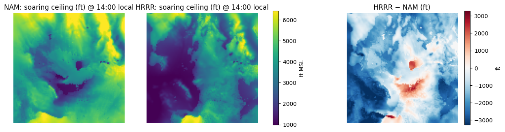
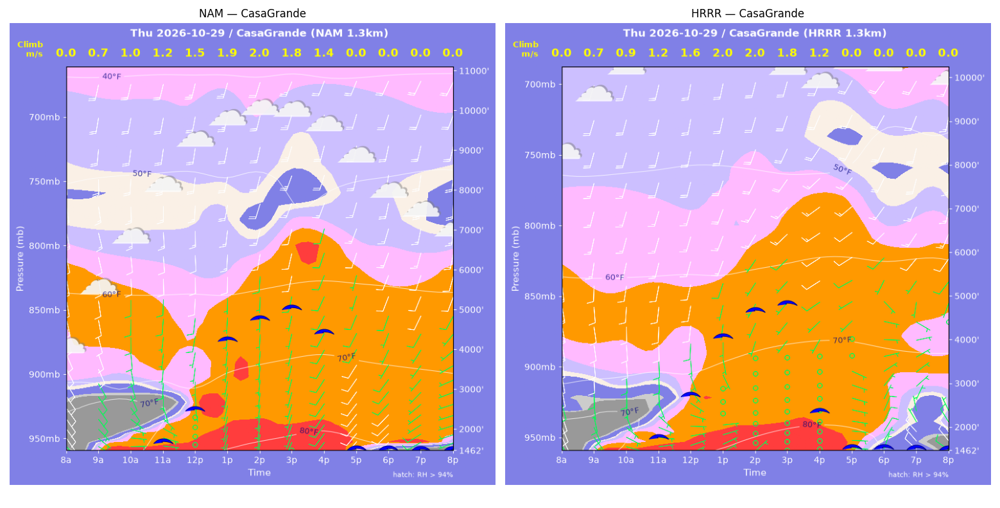
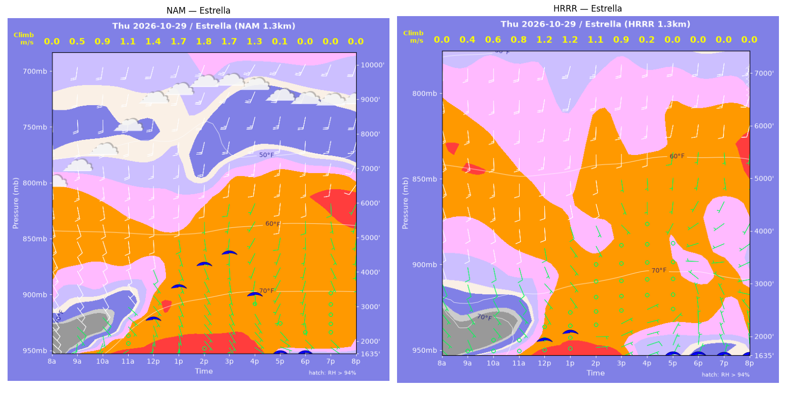
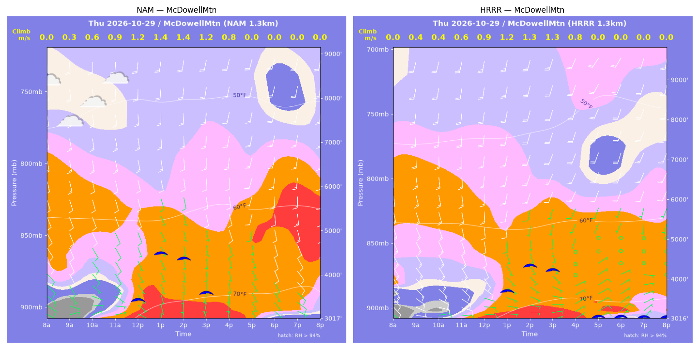
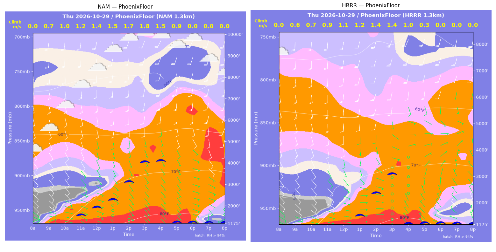
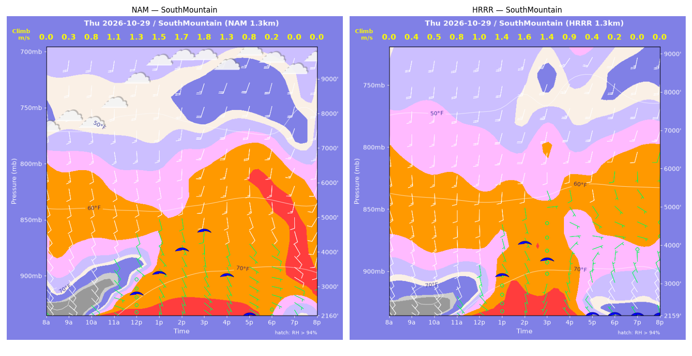
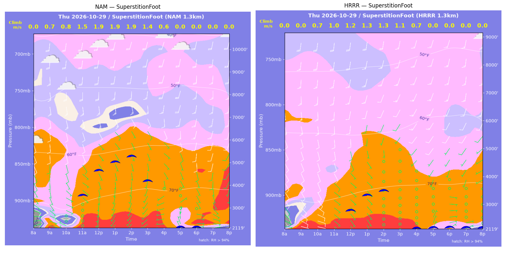
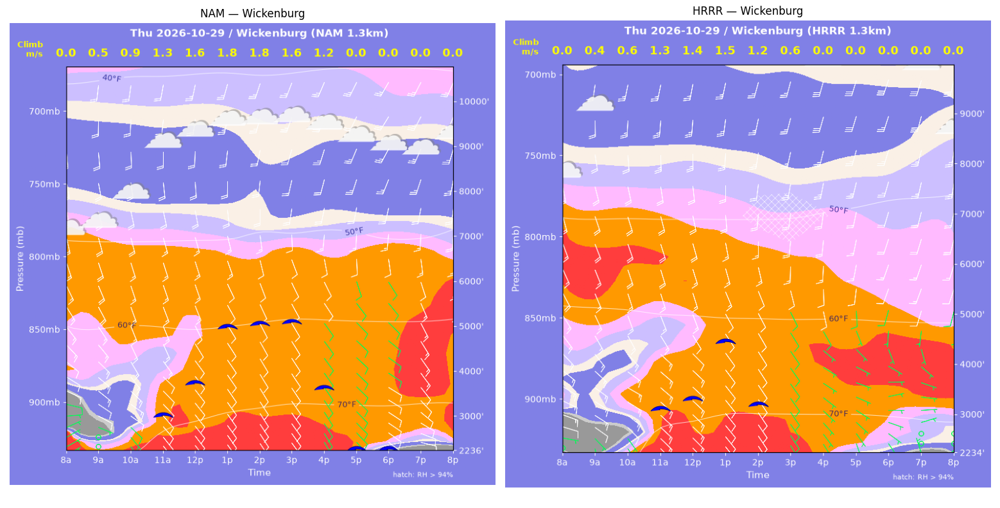

../runs/ab-phoenix-nam — model nam, cycle 2026-10-28 18z, dx 1.3333333740234374 km, 13 hours, grid 114×114../runs/ab-phoenix-hrrr — model hrrr, cycle 2026-10-28 18z, dx 1.3333333740234374 km, 13 hours, grid 114×114Grids identical; afternoon = 12:00–17:59 local (UTC-7). Δ = HRRR − NAM.
| Site | terrain ft | BL top (AGL) med|Δ| / bias (ft) | w* med|Δ| / bias (fpm) | Soaring ceiling med|Δ| / bias (ft) | BL wind speed med|Δ| / bias (kt) | BL wind dir med|Δ| / bias (deg) | 2 m temperature med|Δ| / bias (F) | Sfc LCL (AGL) med|Δ| / bias (ft) | Sensible heat flux med|Δ| / bias (W/m2) |
|---|---|---|---|---|---|---|---|---|---|
| PhoenixFloor | 1176 | 764 / -1159 | 65 / -76 | 758 / -1003 | 2 / -4 | 20 / +8 | 1 / -1 | 877 / +1250 | 51 / -45 |
| SouthMountain | 2160 | 730 / -645 | 75 / -63 | 422 / -493 | 4 / -2 | 22 / -44 | 1 / -1 | 828 / +901 | 52 / -49 |
| SuperstitionFoot | 2119 | 1311 / -909 | 93 / -71 | 1706 / -1213 | 3 / -2 | 46 / +39 | 1 / -1 | 662 / +509 | 61 / -56 |
| Estrella | 1636 | 1518 / -1760 | 111 / -109 | 1566 / -1545 | 1 / -2 | 35 / -48 | 2 / -2 | 723 / +991 | 58 / -51 |
| Wickenburg | 2237 | 749 / -1387 | 96 / -110 | 932 / -1149 | 4 / -0 | 8 / -10 | 2 / -2 | 1121 / +1404 | 56 / -54 |
| CasaGrande | 1462 | 339 / -731 | 3 / -2 | 188 / -379 | 2 / -0 | 23 / -1 | 1 / +0 | 568 / +784 | 11 / +12 |
| McDowellMtn | 3017 | 657 / +3 | 15 / -16 | 247 / -106 | 1 / -0 | 26 / -1 | 0 / -1 | 1012 / +1410 | 7 / -7 |
| Metric | n | median |Δ| | p90 |Δ| | bias |
|---|---|---|---|---|
| BL top (AGL) (ft) | 42 | 751 | 2501 | -941 |
| w* (fpm) | 42 | 59 | 131 | -64 |
| Soaring ceiling (ft) | 42 | 688 | 2055 | -841 |
| BL wind speed (kt) | 42 | 2 | 7 | -1 |
| BL wind dir (deg) | 42 | 23 | 98 | -8 |
| 2 m temperature (F) | 42 | 1 | 3 | -1 |
| Sfc LCL (AGL) (ft) | 42 | 754 | 2738 | +1036 |
| Sensible heat flux (W/m2) | 42 | 39 | 90 | -36 |
diffmap_tol.png| local | BL top NAM/HRRR ft | w* NAM/HRRR fpm | ceiling NAM/HRRR ft | BL wind NAM/HRRR | T2 NAM/HRRR F | HFX NAM/HRRR |
|---|---|---|---|---|---|---|
| 08:00 | 0 / 0 | 0 / 0 | 1176 / 1175 | 3kt@057 / 6kt@105 | 63 / 62 | 0 / 0 |
| 09:00 | 724 / 395 | 139 / 112 | 1176 / 1175 | 10kt@124 / 9kt@109 | 68 / 67 | 58 / 55 |
| 10:00 | 1219 / 560 | 207 / 133 | 1176 / 1175 | 10kt@135 / 10kt@128 | 72 / 70 | 113 / 65 |
| 11:00 | 1443 / 843 | 239 / 175 | 1621 / 1175 | 7kt@112 / 9kt@121 | 75 / 74 | 148 / 99 |
| 12:00 | 1787 / 1204 | 269 / 208 | 1954 / 1175 | 5kt@119 / 7kt@113 | 78 / 77 | 170 / 118 |
| 13:00 | 2238 / 1573 | 293 / 230 | 2289 / 1551 | 7kt@156 / 4kt@138 | 81 / 79 | 177 / 122 |
| 14:00 | 3381 / 2620 | 330 / 274 | 3078 / 2358 | 7kt@165 / 7kt@165 | 83 / 82 | 168 / 124 |
| 15:00 | 4777 / 4009 | 348 / 280 | 3982 / 3053 | 13kt@189 / 6kt@167 | 84 / 83 | 140 / 87 |
| 16:00 | 5459 / 3822 | 305 / 201 | 4026 / 1175 | 17kt@192 / 5kt@110 | 84 / 83 | 83 / 34 |
| 17:00 | 3478 / 937 | 174 / 67 | 1176 / 1175 | 8kt@152 / 5kt@328 | 84 / 82 | 24 / 5 |
| 18:00 | 3459 / 649 | 0 / 0 | 1176 / 1175 | 7kt@132 / 8kt@322 | 83 / 80 | -0 / -0 |
| 19:00 | 278 / 698 | 0 / 0 | 1176 / 1175 | 4kt@224 / 9kt@317 | 81 / 79 | -1 / -0 |
| 20:00 | 85 / 593 | 0 / 0 | 1176 / 1175 | 3kt@246 / 10kt@342 | 79 / 77 | -0 / -0 |
| local | BL top NAM/HRRR ft | w* NAM/HRRR fpm | ceiling NAM/HRRR ft | BL wind NAM/HRRR | T2 NAM/HRRR F | HFX NAM/HRRR |
|---|---|---|---|---|---|---|
| 08:00 | 0 / 0 | 0 / 0 | 2160 / 2160 | 7kt@133 / 9kt@142 | 63 / 67 | 0 / 0 |
| 09:00 | 112 / 197 | 68 / 84 | 2160 / 2160 | 12kt@140 / 11kt@142 | 68 / 69 | 44 / 46 |
| 10:00 | 498 / 258 | 159 / 106 | 2160 / 2160 | 9kt@129 / 10kt@136 | 69 / 70 | 125 / 71 |
| 11:00 | 1066 / 501 | 215 / 152 | 2160 / 2160 | 6kt@130 / 8kt@142 | 71 / 71 | 145 / 109 |
| 12:00 | 1652 / 946 | 262 / 192 | 2842 / 2160 | 7kt@149 / 6kt@165 | 74 / 74 | 169 / 117 |
| 13:00 | 2382 / 2428 | 305 / 272 | 3401 / 3239 | 7kt@166 / 8kt@171 | 76 / 76 | 186 / 129 |
| 14:00 | 3286 / 3496 | 341 / 316 | 4060 / 4053 | 9kt@180 / 15kt@197 | 78 / 78 | 189 / 142 |
| 15:00 | 4106 / 3352 | 349 / 267 | 4575 / 3607 | 16kt@200 / 6kt@171 | 79 / 78 | 162 / 90 |
| 16:00 | 2754 / 1860 | 262 / 183 | 3302 / 2160 | 12kt@174 / 4kt@077 | 79 / 77 | 103 / 51 |
| 17:00 | 2071 / 297 | 165 / 73 | 2160 / 2160 | 8kt@139 / 8kt@322 | 78 / 75 | 34 / 20 |
| 18:00 | 263 / 118 | 35 / 32 | 2160 / 2160 | 3kt@094 / 8kt@308 | 78 / 74 | 3 / 4 |
| 19:00 | 859 / 430 | 0 / 0 | 2160 / 2160 | 9kt@115 / 8kt@318 | 76 / 74 | -1 / -3 |
| 20:00 | 774 / 491 | 0 / 0 | 2160 / 2160 | 9kt@164 / 9kt@326 | 76 / 73 | -6 / -3 |
| local | BL top NAM/HRRR ft | w* NAM/HRRR fpm | ceiling NAM/HRRR ft | BL wind NAM/HRRR | T2 NAM/HRRR F | HFX NAM/HRRR |
|---|---|---|---|---|---|---|
| 08:00 | 0 / 0 | 0 / 0 | 2119 / 2120 | 7kt@070 / 7kt@090 | 61 / 68 | 0 / 0 |
| 09:00 | 923 / 560 | 136 / 0 | 2119 / 2120 | 7kt@131 / 10kt@129 | 76 / 74 | 42 / -5 |
| 10:00 | 557 / 1198 | 161 / 138 | 2119 / 2120 | 2kt@148 / 10kt@143 | 73 / 76 | 117 / 33 |
| 11:00 | 2886 / 1936 | 299 / 199 | 3592 / 2120 | 8kt@148 / 10kt@153 | 78 / 77 | 145 / 62 |
| 12:00 | 4173 / 2538 | 367 / 235 | 4660 / 2833 | 11kt@153 / 8kt@157 | 79 / 78 | 185 / 79 |
| 13:00 | 4629 / 3188 | 383 / 254 | 5011 / 3351 | 13kt@158 / 7kt@183 | 80 / 79 | 190 / 80 |
| 14:00 | 5060 / 3528 | 375 / 255 | 5241 / 3490 | 11kt@152 / 8kt@203 | 81 / 80 | 163 / 72 |
| 15:00 | 4480 / 3298 | 276 / 209 | 4161 / 2120 | 8kt@149 / 6kt@214 | 81 / 80 | 73 / 42 |
| 16:00 | 1902 / 2277 | 110 / 133 | 2119 / 2120 | 3kt@174 / 6kt@220 | 80 / 79 | 11 / 16 |
| 17:00 | 384 / 346 | 0 / 0 | 2119 / 2120 | 3kt@357 / 3kt@042 | 76 / 76 | -1 / -2 |
| 18:00 | 517 / 295 | 0 / 0 | 2119 / 2120 | 3kt@107 / 4kt@074 | 76 / 74 | -2 / -4 |
| 19:00 | 631 / 85 | 0 / 0 | 2119 / 2120 | 6kt@125 / 5kt@066 | 75 / 73 | -5 / -3 |
| 20:00 | 409 / 85 | 0 / 0 | 2119 / 2120 | 6kt@141 / 3kt@037 | 73 / 72 | -5 / -1 |
| local | BL top NAM/HRRR ft | w* NAM/HRRR fpm | ceiling NAM/HRRR ft | BL wind NAM/HRRR | T2 NAM/HRRR F | HFX NAM/HRRR |
|---|---|---|---|---|---|---|
| 08:00 | 0 / 0 | 0 / 0 | 1636 / 1635 | 7kt@132 / 4kt@139 | 61 / 67 | 0 / 0 |
| 09:00 | 396 / 262 | 96 / 80 | 1636 / 1635 | 3kt@161 / 2kt@187 | 69 / 69 | 34 / 30 |
| 10:00 | 853 / 407 | 171 / 112 | 1636 / 1635 | 6kt@139 / 3kt@145 | 72 / 70 | 89 / 53 |
| 11:00 | 1412 / 683 | 225 / 161 | 1636 / 1635 | 7kt@136 / 3kt@129 | 75 / 73 | 125 / 94 |
| 12:00 | 2255 / 1577 | 279 / 229 | 2681 / 1987 | 8kt@166 / 7kt@161 | 78 / 77 | 149 / 118 |
| 13:00 | 3463 / 2567 | 328 / 226 | 3577 / 2119 | 8kt@174 / 8kt@166 | 80 / 78 | 159 / 70 |
| 14:00 | 4397 / 2257 | 345 / 225 | 4203 / 1635 | 11kt@184 / 7kt@159 | 80 / 79 | 146 / 79 |
| 15:00 | 5149 / 2359 | 326 / 187 | 4509 / 1635 | 11kt@184 / 3kt@139 | 81 / 79 | 105 / 43 |
| 16:00 | 4437 / 114 | 252 / 31 | 3310 / 1635 | 8kt@196 / 8kt@070 | 81 / 78 | 56 / 4 |
| 17:00 | 94 / 363 | 18 / 0 | 1636 / 1635 | 5kt@106 / 5kt@027 | 79 / 76 | 0 / -5 |
| 18:00 | 266 / 292 | 0 / 0 | 1636 / 1635 | 3kt@142 / 4kt@005 | 76 / 74 | -3 / -3 |
| 19:00 | 306 / 358 | 0 / 0 | 1636 / 1635 | 3kt@129 / 6kt@343 | 75 / 73 | -2 / -3 |
| 20:00 | 514 / 307 | 0 / 0 | 1636 / 1635 | 6kt@162 / 4kt@347 | 74 / 73 | -3 / -2 |
| local | BL top NAM/HRRR ft | w* NAM/HRRR fpm | ceiling NAM/HRRR ft | BL wind NAM/HRRR | T2 NAM/HRRR F | HFX NAM/HRRR |
|---|---|---|---|---|---|---|
| 08:00 | 0 / 0 | 0 / 0 | 2237 / 2235 | 7kt@063 / 2kt@297 | 61 / 57 | 0 / 0 |
| 09:00 | 527 / 220 | 99 / 82 | 2237 / 2235 | 7kt@113 / 2kt@172 | 67 / 65 | 27 / 38 |
| 10:00 | 891 / 496 | 170 / 117 | 2237 / 2235 | 11kt@125 / 11kt@136 | 71 / 70 | 82 / 49 |
| 11:00 | 2036 / 2291 | 260 / 261 | 3063 / 3178 | 13kt@144 / 14kt@147 | 74 / 75 | 129 / 120 |
| 12:00 | 2869 / 2489 | 311 / 275 | 3764 / 3366 | 12kt@153 / 12kt@148 | 76 / 76 | 157 / 129 |
| 13:00 | 4516 / 4419 | 364 / 296 | 4972 / 4467 | 13kt@161 / 17kt@169 | 77 / 76 | 161 / 91 |
| 14:00 | 4706 / 4448 | 352 / 229 | 5025 / 3211 | 15kt@172 / 16kt@179 | 77 / 76 | 140 / 41 |
| 15:00 | 5122 / 4004 | 321 / 124 | 5053 / 2235 | 12kt@179 / 19kt@185 | 78 / 75 | 96 / 7 |
| 16:00 | 4722 / 1369 | 236 / 0 | 3594 / 2235 | 16kt@185 / 7kt@124 | 77 / 74 | 40 / -2 |
| 17:00 | 3512 / 397 | 0 / 0 | 2237 / 2235 | 9kt@159 / 5kt@145 | 75 / 71 | -5 / -2 |
| 18:00 | 1047 / 84 | 0 / 0 | 2237 / 2235 | 10kt@122 / 2kt@175 | 71 / 70 | -5 / -0 |
| 19:00 | 600 / 84 | 0 / 0 | 2237 / 2235 | 11kt@121 / 3kt@337 | 70 / 68 | -12 / -1 |
| 20:00 | 1131 / 84 | 0 / 0 | 2237 / 2235 | 15kt@139 / 1kt@003 | 70 / 69 | -26 / -0 |
| local | BL top NAM/HRRR ft | w* NAM/HRRR fpm | ceiling NAM/HRRR ft | BL wind NAM/HRRR | T2 NAM/HRRR F | HFX NAM/HRRR |
|---|---|---|---|---|---|---|
| 08:00 | 0 / 0 | 0 / 0 | 1462 / 1462 | 4kt@120 / 4kt@130 | 58 / 59 | 0 / 0 |
| 09:00 | 520 / 483 | 136 / 135 | 1462 / 1462 | 8kt@136 / 8kt@157 | 65 / 69 | 73 / 78 |
| 10:00 | 814 / 791 | 192 / 185 | 1462 / 1462 | 7kt@127 / 6kt@158 | 70 / 73 | 135 / 125 |
| 11:00 | 1135 / 1190 | 230 / 240 | 1736 / 1836 | 5kt@164 / 4kt@161 | 75 / 77 | 168 / 181 |
| 12:00 | 2134 / 2376 | 291 / 320 | 2517 / 2766 | 6kt@188 / 8kt@184 | 80 / 80 | 182 / 218 |
| 13:00 | 4446 / 4144 | 380 / 384 | 4228 / 4057 | 10kt@181 / 14kt@200 | 82 / 82 | 194 / 217 |
| 14:00 | 5198 / 5039 | 385 / 387 | 4721 / 4630 | 12kt@189 / 13kt@212 | 83 / 84 | 173 / 182 |
| 15:00 | 5952 / 5577 | 349 / 351 | 4967 / 4760 | 18kt@200 / 16kt@223 | 84 / 85 | 113 / 124 |
| 16:00 | 6219 / 4173 | 279 / 227 | 4357 / 2300 | 14kt@200 / 12kt@236 | 84 / 85 | 55 / 45 |
| 17:00 | 2996 / 1251 | 0 / 0 | 1462 / 1462 | 8kt@208 / 5kt@108 | 82 / 80 | -8 / -3 |
| 18:00 | 948 / 568 | 0 / 0 | 1462 / 1462 | 10kt@224 / 9kt@028 | 77 / 77 | -9 / -1 |
| 19:00 | 474 / 493 | 0 / 0 | 1462 / 1462 | 8kt@238 / 6kt@328 | 76 / 76 | -4 / -9 |
| 20:00 | 282 / 389 | 0 / 0 | 1462 / 1462 | 7kt@252 / 10kt@326 | 74 / 74 | -3 / -6 |
| local | BL top NAM/HRRR ft | w* NAM/HRRR fpm | ceiling NAM/HRRR ft | BL wind NAM/HRRR | T2 NAM/HRRR F | HFX NAM/HRRR |
|---|---|---|---|---|---|---|
| 08:00 | 0 / 0 | 0 / 0 | 3017 / 3017 | 6kt@110 / 5kt@105 | 62 / 62 | 0 / 0 |
| 09:00 | 107 / 248 | 56 / 70 | 3017 / 3017 | 5kt@071 / 7kt@099 | 65 / 68 | 22 / 20 |
| 10:00 | 407 / 280 | 122 / 78 | 3017 / 3017 | 6kt@081 / 8kt@105 | 67 / 67 | 63 / 25 |
| 11:00 | 832 / 540 | 170 / 127 | 3017 / 3017 | 7kt@143 / 10kt@124 | 70 / 69 | 86 / 56 |
| 12:00 | 1855 / 964 | 231 / 174 | 3484 / 3017 | 9kt@159 / 10kt@143 | 72 / 71 | 97 / 82 |
| 13:00 | 3129 / 2381 | 283 / 238 | 4505 / 3732 | 11kt@169 / 11kt@184 | 74 / 73 | 106 / 86 |
| 14:00 | 3022 / 3153 | 272 / 264 | 4368 / 4341 | 11kt@173 / 13kt@197 | 74 / 74 | 97 / 89 |
| 15:00 | 2615 / 3318 | 228 / 249 | 3588 / 4219 | 10kt@172 / 10kt@201 | 74 / 74 | 65 / 71 |
| 16:00 | 2233 / 2446 | 162 / 155 | 3017 / 3017 | 10kt@165 / 5kt@202 | 74 / 74 | 25 / 23 |
| 17:00 | 574 / 1186 | 0 / 0 | 3017 / 3017 | 6kt@156 / 6kt@058 | 73 / 72 | -2 / -4 |
| 18:00 | 831 / 629 | 0 / 0 | 3017 / 3017 | 8kt@154 / 6kt@053 | 70 / 69 | -1 / -3 |
| 19:00 | 660 / 389 | 0 / 0 | 3017 / 3017 | 8kt@133 / 5kt@061 | 70 / 70 | -1 / -2 |
| 20:00 | 378 / 331 | 0 / 0 | 3017 / 3017 | 6kt@096 / 4kt@049 | 68 / 70 | -2 / -3 |
montage_PhoenixFloor.pngmontage_SouthMountain.pngmontage_SuperstitionFoot.pngmontage_Estrella.pngmontage_Wickenburg.pngmontage_CasaGrande.pngmontage_McDowellMtn.png